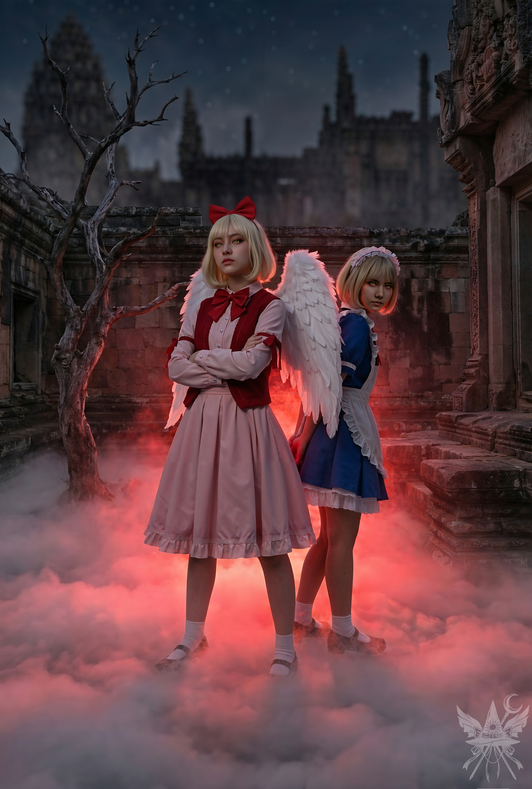

第83章 過去からの開発者
（一族の不仲か。利用させてもらおう）
冷たく微笑むと、瞬時に怯えた娘の仮面を被り、悲痛な声を張り上げた。
「お父様！ 私はシューニャではありません！ この数珠は、もう二日も前に失くしているんです！ 誰かに嵌められたんですよ！ ……ええ、心当たりはあります」
一族の長は仏頂面のまま黙り込み、その言葉を跳ね除けようとする。だが、傍らの空郎は真剣な眼差しで耳を傾けていた。好機と見て、さらに言葉を重ねる。
「……街の混乱も、あま子の拉致も、すべて悪魔たちの仕業ですよ」
父親は疑わしげに目を細めた。
「待て。なぜお前の言葉を信じろと言うんだ？ お前が有頂天市の運命を心配するなど、到底思いもよらん」
「ひどい！ この混乱を収めてもらおうと、龍宮へ行ってきたばかりだというのに！」
空郎が思わず声を上げる。
「まさか、龍神島に一人で？ お前、正気か？」
「ええ、一人で。だって、誰も私の言葉を信じてくれないでしょう？ だから、この騒ぎを鎮めていただこうと龍神様にお願いに行ったんです。でも、あいにくご不在で……。仕方なく、ご子息をお連れしました」
空郎の表情がサッと青ざめる。最悪の事態を想像したのが手に取るようにわかった。構わず追撃をかける。
「……他に方法がなかったんですよ。龍神様が降臨すれば、仏も天使も、その威光に逆らうことなどできません。だからこそ、私がここに縛り付けられている間に、本当のシューニャが外で内戦を引き起こそうとしているんです！」
家族は驚愕に言葉を失った。父親はなおも険しい視線を崩さないが、空郎は眉をひそめ、目を見開いている。そして、絞り出すように呟いた。
「龍神様のご子息……？ まさか、風太様のことか……？ 天子、お前は……やはりどこかおかしい」
空郎は踵を返し、足早に出口へと向かう。
「待て、どこへ行く？」
老僧が鋭く咎める。
「石庭ですよ、父上。少し頭を冷やしてきます」
空郎は感情を押し殺して答えた。
「あれが策略だとわからんのか？ 逃げようとしているだけだ！」
「では、一緒に行きましょう。早く……」
老僧は忌々しげに頷くと、空郎に支えられながら階段を下りていく。両腕に食い込む縄はきつく縛られたままで、逃げ出す隙など微塵も与えられていない。
（縄を魔法で焼き切ろうか……いや、まだだ）
腰のあたりで微かに杖の重みを感じる。空郎は気付かず、杖ごと腕を縛り上げていた。幻術によって、その存在は完全に隠蔽されている。
木製の階段を下りながら、空郎の耳元でそっと囁いた。
「あの悪魔たちは閻魔と繋がっていて、彼岸の許可を得て天界を乗っ取ろうとしているの」
空郎は無言で足を進める。その横顔には深い混乱が刻まれていたが、言葉が確実に彼の心を揺さぶっているのがわかった。父親の絶対的な権威に、わずかなひびが入ればそれで十分だ。背後を歩く老僧に聞こえないよう、声を潜めて続ける。
「空郎、あま子を救う方法を知っているわ。私を解放して」
「本当に知っているのか？ どうしてお前を信じられる？」
「悪魔たちはメデアという人間を探しているの。……私も、空郎も、会ったことがあるわよね」
「まさか……」
空郎の目が驚きに見開かれる。
「今日、ここに泊まって、あなたの試験を受けた女性よ。悪魔たちは彼女を狙っているの。……あま子を助けるには、彼女を引き渡すしかないわ」
「では、メデアの居場所も知っているんだな？」
「ええ、知っているわ。私を解放してくれれば、必ず力になる」
その言葉が、ついに空郎の心を動かした。歩きながら、背後に回した手が慎重に縄を緩め始める。だが、焦って解きはしない。まだ、その時ではない。
三人は薄暗い寺院を抜け、夜気の沈む庭へと出た。空郎に小声で指示を出す。
「この子は風太様！ あま子を連れ去った悪魔の居場所を探してくるわ！ 私が戻るまで、風太様を絶対に誰にも見られないよう隠していて！」
「待て、私も行く！」
空郎が声を荒らげる。
「だめよ、空郎。姉として、あなたにはここに残って寺院を守ってほしいの」
そして一転、夜の静寂を切り裂くような大声を庭中に響かせた。
「風太！ どこなの！？ もう大丈夫よ！」
だが、小さな影は姿を現さない。三人は警戒しながら庭の奥へと足を踏み入れる。老僧の厳しい視線が、背中に突き刺さったままだ。
「風太！ 返事をして！」
焦燥感を滲ませる演技を交えながら、暗がりへ呼びかける。
「あら？ 風太ですって？ そんな子、知らないわ」
夕闇の底から、底冷えのする聞き覚えのある女の声が響き渡った。

赤黒い霧が足元から這い上がり、鼻を突く焦げ臭さが神聖なはずの石庭を禍々しい領域へと変質させていく。炎の余韻を思わせる熱気と、背筋を凍らせるほどの絶対的な冷酷さ。青白い月光の下、崩れかけた石壁を背にして、最強の悪魔の姉妹がそこに立っていた。
「おい、比那名居のじじい！ メデアはまだか！ いい加減にしな！」
苛立ちを隠そうともせず、幻月が一族の長をねめつける。
圧倒的な殺気を前にしても、ひるむことなく静かに口を開く。
「見つけました。ですが、その前に、あま子を返してください」
幻月は鼻で嗤った。
「ふん。あんたに指図される筋合いはないわよ。可愛い妹がどうなってもいいのかしら？ 覚悟があるなら止めないけどね」
空郎が腰の剣に手をかけ、殺気に当てられたようにわずかに体が浮き上がる。だが、それを制止したのは、背後から冷徹な視線を送る夢月だった。
「やめなさい。そんなことをしても無駄ですわ」
殺気立つ空郎へと向き直る。
「空郎、落ち着いて。あま子を危険な目に遭わせたくないでしょう」
静かに言い聞かせた後、再び赤い霧の奥に佇む姉妹を見据えた。
「風太様を連れ去ったのは、あなたたちでしょう？」
幻月は不敵な笑みを浮かべる。
「その通りよ。これで人質は二人ね。さっさとメデアを渡しなさい。さもないと、この寺院もろとも街ごと焼き払うわよ」
（見事に釣られたわね。龍神の子を人質にするなんて、天界の仕組みを何も理解していない証拠だわ。……だったら、とことん付き合ってあげる）
内心で冷笑しながら、降伏を装って小さく息を吐き、頭を下げる。
「……人質には指一本触れさせません。メデアの居場所を教えましょう」
「さあ、どこにいるのかしら？」
夢月が面白そうに目を細める。空郎と老僧は息を呑んで黙り込んでいた。突然の大胆な発言に戸惑いながらも、今は天子の言葉にすがるしかないと判断したのだろう。
「メデアは有頂天市にはいません。今どこにいるか、正確に知っています。たった今、そこから来たんですから」
「早く教えなさい」
夢月がわずかに苛立ちを見せ、姉の隣へと歩み出る。
「龍宮です。龍神様の庇護のもとにいます」
これが狙いだった。龍神が戻り、残された偽の令状を見れば、息子の誘拐犯が誰か思案するはずだ。目の前の狂犬姉妹は、閻魔以上に予測不能で厄介な脅威。ここでぶつけて共倒れになれば御の字だ。
「どうしてあんたを信じろっていうのよ？」
幻月が疑わしげに眉をひそめる。
「私が妹の命を危険にさらすと思っているんですか？」
その言葉に、背後の父親と空郎が顔を見合わせる気配がした。天子が妹の身を案じるなど、彼らにとっては信じ難いことなのだろう。
「ただ、龍神様はメデアを簡単には渡さないでしょう。いかなる者にもひるまない方ですから」
夢月が、優雅な所作で意味深な笑みを浮かべた。
「私たちなら話は別でしょう？ ……私たち、『月の姉妹』ですもの」
小さく頷き、言葉を繋ぐ。
「それでも、おそらく無理でしょう。龍神様は閻魔様にしか敬意を払わないようですから……。閻魔様の指令で動いていると言えば、龍神様でさえ逆らえないでしょうけれど」
姉妹は顔を見合わせた。言葉を完全に信じたわけではないだろうが、標的を狩り出すためなら何でもする。その血に飢えた本性は隠しきれていなかった。
夢月が冷ややかに微笑む。
「わかりましたわ。確認してみましょう。龍宮はどちらかしら？」
「ここから真東へ。雲の島の上にあります。暗闇の中でも輝いているので、すぐに見つかるはずです」
静かに宙へ浮き上がった姉妹が、東の夜空を見据える。
「もし私たちを騙したら、妹は二度と生きて帰れないわよ！」
幻月がそう言い捨てるが早いか、二つの影は夜の闇を切り裂き、猛烈な速度で東へと飛び去っていった。
（ミカエルはどこだ？ 寺院がこれほど騒ぎになっているのに、一向に姿を見せないなんて……）
「南無三！ 本当に龍神島へ行きおったのか！？」
老僧が怒鳴り声を上げる。
「ええ、父上。あの悪魔どもがメデアを捕まえてくれるといいでしょう。私はあま子を探しに行きます。二人は寺院で待っていてください」
空郎が焦燥に駆られた声で告げる。
「待て！ どこへ行く！」
老僧がしびれを切らして腕を掴もうと手を伸ばすが、すでに用済みだ。魔法の熱で手首を縛る縄を一瞬にして焼き切ると、夜風を蹴って有頂天市の中心部へと一気に飛び出した。
（カナが月の姉妹に見つかったら大変だわ……）
巨大な禿山に近づくにつれ、焦燥感が募る。 頂上は平らで、冷たい月光を浴びて白く輝いていた。
（まさか……これが要石の頂上……？）
高度を下げると、前方で数十対もの天使たちの分厚い翼が、揺らめく炎に照らされて夜闇に不気味なシルエットを蠢かせている。迂回すれば大幅な時間のロスだ。禿山の頂上は、アーモンドの木が生い茂る公園になっていた。慎重に接近し、暗がりに身を潜めて天使たちの会話に耳を澄ませる。しかし、「自由」「シューニャ」「もうすぐ」といった単語が熱を帯びて断片的に聞こえてくるだけで、全容は掴めない。
「ニャー」
（今の……猫……？）
「ニャーオ！」
今度ははっきりと鳴き声が鼓膜を打った。 まるでこちらを誘っているかのようだ。
「ソクラテス……？」
「その通りだニャ……」
木陰から、丸々とした重みが肩に飛び乗ってきた。 「……久しぶりだニャ、メデア」
反射的に引き剥がそうとするが、鋭い爪が布地に深く食い込み、びくともしない。 「どうして私だとわかったの？」
「何を言ってるんだニャ？ それは秘密だニャ。 ……でも、すぐにわかるニャ」
「今までどこにいたの？ お腹を空かせて倒れてるんじゃないかと心配してたわ」
「俺が心配される？ ふざけないでくれ。 こんな可愛い猫を放っておく奴がいると思うかニャ？」
皮肉を込めて、そのふっくらとした頬と丸々とした腹を撫で回してやる。 「さあ、行くんだニャ。ミルクをもらった場所へ案内するニャ」
杖の先に灯した魔法の光で足元を照らし、ソクラテスの後を追って茂みの中へ入る。 二本の太い木の幹の間に、岩肌に溶け込むように設えられた小さな木製の扉があった。 ためらうことなく押し開ける。
「ここは……シューニャの隠れ家……？」
光を強め、内部を照らし出す。 カビ臭く薄汚れた小屋の中には、壊れかけた家具とぼろきれが山積みになっているだけで、もぬけの殻だった。
「こっちへ来るニャ、メデア。もっと近くへ」
ソクラテスは肩から飛び降り、小屋の奥へと誘う。 通り抜けた先は、ひんやりとした岩の匂いが漂う埃っぽいトンネルだった。
「どこへ行くの？ ソクラテス」
ソクラテスは答えず、暗い角を曲がる。 後を追うと、行き止まりに重厚な石の扉が現れた。 扉には小さな覗き窓が穿たれており、ソクラテスが再び肩へよじ登ってきて、そこから外の様子を窺うよう促した。

窓越しに外を覗き込むと、熱気とパチパチと爆ぜる音が顔を叩いた。 星空の下、ゴツゴツとした荒涼たる岩肌を、無数の松明が不吉なオレンジ色に染め上げている。 そこに集結していたのは、神聖な守護者などではない。 使い古された武具を身に纏い、抜き身の刃を掲げる、野性味に溢れた天使たちの私兵の群れだった。 立ち込める煙と熱狂が、暴力の予感を孕んで夜気を震わせている。 全員の狂気じみた視線が、虚空の一点へと注がれていた。
「その時が来た！」
姿は見えないが、シューニャの厳粛な声が岩山に響き渡った。 「我々が当然持つべきものを取り戻すのだ！ 緋想の剣は我らのものとなる！」
群衆は熱狂的な歓声を上げ、シューニャに賛同し、松明と剣を一斉に夜空へと突き上げる。
「これ全部、あなたの仕業なのね、ソクラテス？」
肩の上の猫に小声で尋ねる。
「まあ……下準備は俺の前からあったけどニャ……」
「天界の内戦が、閻魔との戦いにどう繋がるの？ もう計画を教えてくれないかしら」
「わかったニャ。聞いてくれ。 あま子が帰り道で、ある仏と話していたのを覚えているかニャ？ あの男は要石の頂上でシューニャが初めて姿を現したのを見て、すぐに寺院に報告したニャ。 その時、これが俺たちのチャンスだと気づいたんだニャ。 閻魔のせいに仕立て上げて、反乱分子を煽り、事態をエスカレートさせるだけでいいニャ。 君たちの新聞は、これ以上ないほど役に立ったニャ。 しかし、シューニャは単純じゃなくて、閻魔と争うことは望んでいないニャ。 代わりに、天使を使って地震を起こす剣、緋想の剣を手に入れ、龍神を倒そうとしているニャ。 天界で絶対的な権力を握ろうとしているみたいだニャ」
「で、ソクラテスの計画は？」
「閻魔は事件に興味を持って、天界に集中するだろうニャ。 その時こそ、俺たちは彼岸の中枢にあるサーバーを攻撃するニャ。 そこから自分たちの名前を消去して、転生のリスクなしに戦い続けるニャ。 ただし、データベース全体を消去しちゃダメだニャ。 ミラーサーバーがあるからニャ……」
「一体どこでそんなことを？ どうやってシステムに侵入するつもりなの？」
「へへへ。開発者は常にシステムに抜け穴を残しておくもんだニャ」
（開発者……？）
「あなたが……？」
「それは長い話だニャ、メデア。 どうして俺が閻魔に復讐したい猫なのか、わかるかニャ？ 奴らにちょっと……左遷されたんだニャ。 いずれにせよ、今はここで夜明けを待つだけだニャ。 シューニャが全部やってくれるニャ」
「でも、カナは？ 彼女が今、龍宮にいるって知っているの？」
「カナは自分の役割を果たしたニャ。 今となっては邪魔になるだけだニャ。 あの子には分別がないから、何が起こっても構わないニャ。 君はあいつのこと、そんなに心配かニャ？」